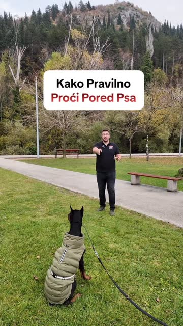
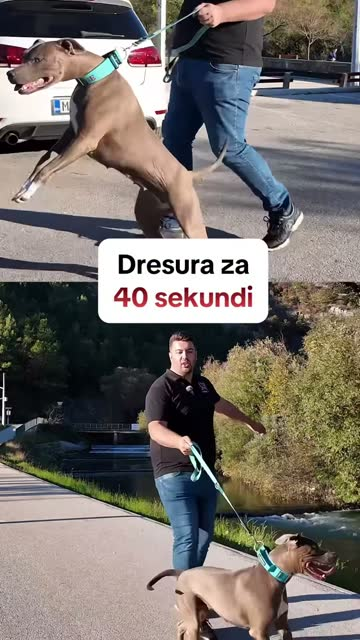
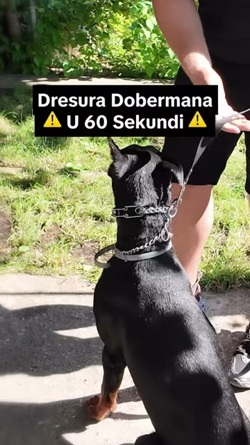
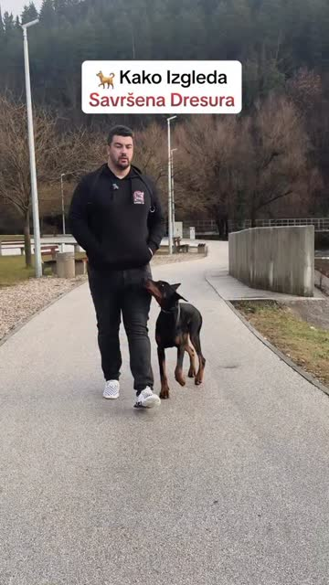
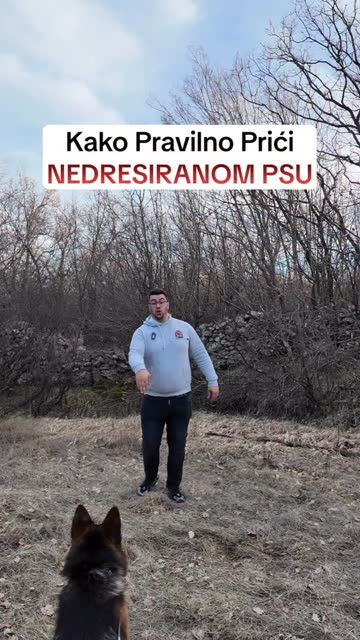

SuperDog Akademija · škola dresure pasa iz Bosne i Hercegovine
Od prvog videa do 277.000 pratilaca
Ivan drži školu dresure pasa i prodaje online kurseve za vlasnike.
Sa njim radim od prvog videa koji je SuperDog objavio.
Sve brojke na ovoj strani su rezultat tog sadržaja.
Facebook 91.720
TikTok 79.400
Instagram 63.930
YouTube 42.500
Pratioci: stanje 1. novembra 2026.
Pregledi, lajkovi i komentari: 203 videa na Instagramu od februara 2025. do avgusta 2026.
Video koji je doveo 7.000 ljudi

Dresura za 40 sekundi: 1.073.724 pregleda i 1.128 komentara.
Pas koji vuče povodac toliko da hoda na dve noge, i isti pas pored Ivana posle 40 sekundi rada.
Ispod videa piše „Pošalji poruku Šetnja“.
Iz ovog jednog videa javilo se preko 7.000 zainteresovanih ljudi.
Najgledaniji videi

1.344.672Kako proći pored psa ako te je strah
1.073.724Dresura za 40 sekundi
1.051.477Dresura dobermana u 60 sekundi
792.697Kako pas izgleda posle VIP dresure
701.772Kako prići nedresiranom psuKako je SuperDog rastao od februara 2025.
Prvi video SuperDoga.
Prvi klipovi imaju oko 27.000 pregleda.
Prvi video preko milion: dresura dobermana u 60 sekundi, 1.051.477 pregleda.
Dresura za 40 sekundi: 1.073.724 pregleda i preko 7.000 zainteresovanih.
Polovina videa iz tog meseca ima preko 246.000 pregleda.
Najgledaniji video do sad: kako proći pored psa ako te je strah, 1.344.672 pregleda.
Krenuo je SuperDog Klub, zajednica u kojoj Ivan i treneri odgovaraju članovima na snimke njihovih pasa.
Zašto videi o povodcu dovode ljude u kurs
Za vlasnike pasa najveći svakodnevni problem je pas koji vuče povodac.
Dva videa o tome prešla su milion pregleda, a Ivanov kurs za šetnju rešava baš taj problem.
Šta SuperDog danas prodaje
Online kurseviSavršena šetnja, Crate trening i WC trening.
SuperDog KlubMesečna članarina: lekcije, poziv uživo svake subote i odgovor na snimak tvog psa.
Dresura uživoMesec dana rada sa Ivanovim trenerima.
Konsultacija sa IvanomPoziv od 60 minuta.
Hoćeš isto za svoj posao?
Zakaži besplatan poziv od 30 minuta.
Prođemo tvoju situaciju i kažem ti šta bih menjao u narednih 90 dana.
Poziv je za vlasnike biznisa koji već zarađuju.